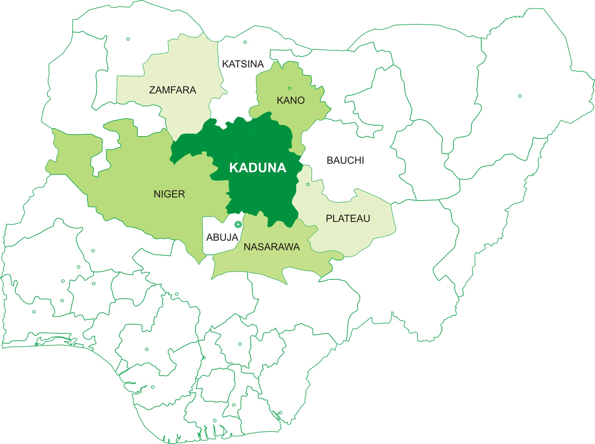

About the Exhibition
|
About the ExhibitionAbout KadunaNigeria is the biggest economy in Africa and Kaduna State is one of the 36 States of Nigeria. The State occupies the entire central position of Nigeria and shares border with other States like Zamfara, Katsina, Kano, Nassarawa and Plateau as well as Abuja the Federal Capital of Nigeria. It has a market population of about 20 million putting into consideration population of the adjourning States. About 60% of the population is engaged in agriculture producing both food and cash crops. The State produces such agricultural produce like corn, sorghum, cassava, tomatoes, sugarcane, groundnut, millet, ginger, cotton and fruits. It can also boast of highly skilled manpower in almost all fields of human endeavor. It is home to a number of educational and research institutions including the famous Ahmadu Bello University and National Research Institute for Chemical Technology both in Zaria. Infrastructural development is the backbone of any meaningful economic growth, Kaduna State government therefore has laid much emphasis on this by developing good inter and intra state road network. There is an international airport where private airlines operate to and from Kaduna. The energy sector in Nigeria is presently undergoing reforms and transformation and Kaduna State is not left out, new power plants are presently under construction to meet the energy needs of the State. The following minerals are found in Kaduna State; granite, kaolin, columbite, gemstone, gold, aquamarine and sapphires. The development of the small and medium scale industries is key to the economic growth of the State. Some of the large industrial concerns in the State include Kaduna Refinery and Petrochemical Company (The largest in the country) and Peugeot Automobile Nigeria an Auto assembling plant. |
| Powered by: |